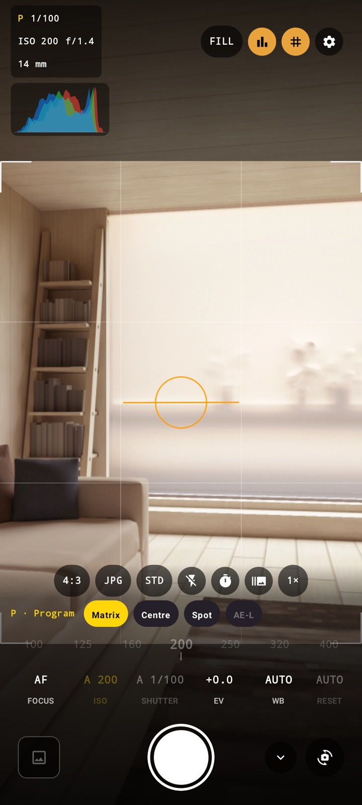
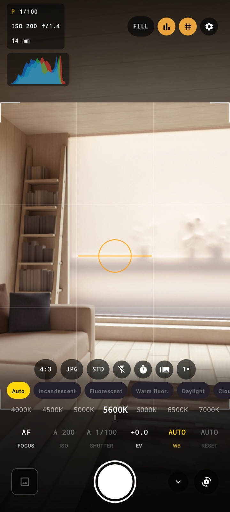
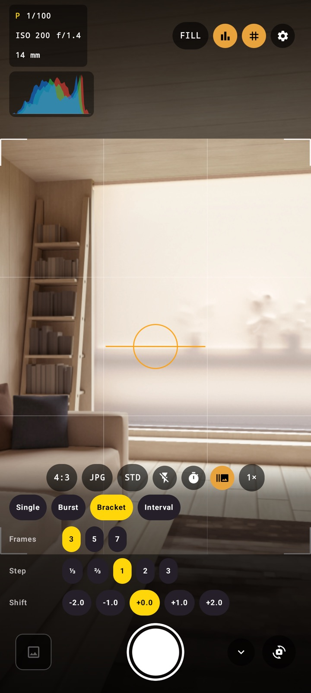
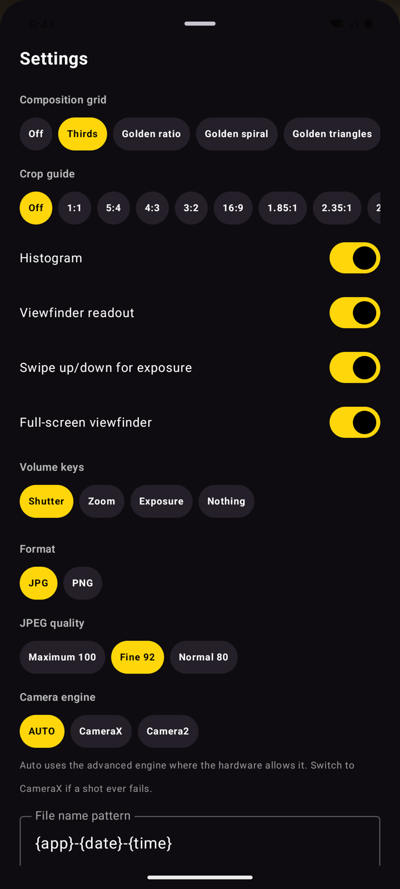

Android · manual stills camera
A screen-filling preview with a rangefinder-style bright-line frame, so the frame never lies about what the picture will contain. Every control a photographer actually reaches for is one tap from the shutter — and nothing else is.
Free. RAW DNG included, not an unlock. No subscription, no watermark, no account — and no internet permission at all.

Most camera apps show you a preview and crop something else. Groundglass draws the bright-line frame over a fullscreen preview and captures exactly what sits inside it.
01
Amber corners mark the picture. Everything inside them is in the file; everything outside is the part of the sensor you are seeing but not keeping.
02
FILL covers the screen for composing at arm's length. FIT shows the whole sensor frame when you need to see the edges. Either way the still is cropped from what you framed.
03
ISO, shutter, exposure compensation, white balance and focus mode stay on screen the way they do on a DSLR's top plate. Collapse the controls entirely for a clean frame.
Screens from the app as it ships. Tap any of them to see it full size.



You never pick an exposure mode from a list. Dial a value in and that control is yours; leave it alone and the camera holds it. The letter in the readout only tells you where you stand — P, S, I or M.
A DNG holds the sensor data before any processing — what you want if you intend to develop the picture yourself. It is included, not sold as an unlock. On a device that cannot produce one, the option hides itself instead of sitting there dead.
What your phone can actually do depends on its Camera2 support, which varies by manufacturer. Controls your camera cannot honour are hidden rather than shown as dead switches.
| ISO | 25 – 12800, click-stop, device range permitting |
|---|---|
| Shutter speed | 1/8000 s – 30 s |
| Exposure compensation | ±, in ⅓ stops, across the device's own range |
| White balance | 2200 K – 9500 K manual, plus eight presets |
| Focus | Manual by distance; AF-C, AF-S, macro, infinity |
| Formats | JPG, PNG, HEIF, and RAW DNG where the sensor supports it |
| Android | 8.0 (API 26) and newer |
| Price | Free. No subscription, no in-app purchase, no ads |
Not "we promise not to" — the shipped build declares no INTERNET permission, so there is no network for a photo to leave by.
No sign-in, no email, no profile. Open the app and shoot.
No usage tracking, no crash SDK, no ad SDK. The advertising ID permission is removed from the build.
Photos land in Pictures/Groundglass on your own storage. Uninstalling the app does not touch them.
There are no LUTs, no effects, no beauty processing and no photo editor. It takes the picture and hands it to you. If you want colour grading, do it in the editor you already trust — that is a different job, and this app deliberately does not try to do it.
Yes. DNG capture is part of the app, not an unlock, and there is nothing to buy in Groundglass at all. Whether your phone can produce a DNG is up to its camera hardware and firmware, not to us.
Manual sensor control is an optional Camera2 capability. Some devices — and most emulators — expose the camera without it, and no app can dial in ISO or shutter speed there. Groundglass hides those controls instead of showing switches that do nothing.
Into Pictures/Groundglass in your device's own storage by default, registered with the media library so your Gallery sees them immediately. You can change the folder name and the filename pattern in settings.
Only if you switch that on. It is off by default, and until you enable it the app never requests the location permission. When enabled, the coordinates are written into the EXIF of your own image files, on the device. Remember that the metadata travels with the file when you share it.
No. Groundglass is Android only.
FightTech VN, a small team in Vietnam. Write to trunghieu4121993@gmail.com — the address on the Play listing reaches the people who wrote the app.